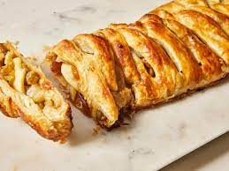

Apple Strudel

Description
Ingredients
- 1 Granny Smith apple - peeled, cored and coarsely shredded
- 3 Granny Smith apples - peeled, cored and sliced
- 1 cup brown sugar
- 1 cup golden raisins
- 1 sheet frozen puff pastry, thawed
- 1 egg
- ¼ cup milk
Steps
- Preheat the oven to 400 °F (200 °C). Line a baking sheet with parchment paper.
- Place shredded and chopped apples in a large bowl. Stir in brown sugar and golden raisins; set aside.
- Place puff pastry on the prepared baking sheet. Roll lightly with a rolling pin. Arrange apple filling down one side of pastry lengthwise.
- Fold pastry lengthwise over apple mixture; dampen edges of pastry with water, then press or crimp edges to seal. Whisk egg and milk together; brush on top of pastry. Cut 2 or 3 slits on the crust to allow steam to escape.
- Bake in the preheated oven until golden brown, 35 to 40 minutes.
Return to main page